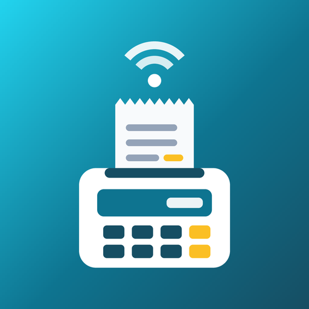

Política de privacidad
Punto de Venta
Español · English
Última actualización: 28 de noviembre de 2026
Esta política explica qué información maneja la aplicación para Android Punto de Venta (en inglés, Point of Sale; la “App”), desarrollada por Oscar Ramírez (RamzLabs), Guadalajara, Jalisco, México (el “Desarrollador”), y cómo se utiliza.
- La información de tu negocio (productos, inventario, compras, ventas, usuarios y ajustes) se guarda solo en el dispositivo que elegiste como servidor. No se sube a internet y el Desarrollador no la recibe ni la puede ver.
- Las estaciones (otros teléfonos o tabletas de tu negocio) se comunican con el servidor solo dentro de tu red Wi-Fi local.
- La App no requiere crear una cuenta. Los usuarios entran con un PIN que se guarda cifrado (como un resumen irreversible).
- La cámara se usa para leer códigos de barras y QR (esas imágenes no se guardan) y, si quieres, para tomar fotos de tus productos, que se guardan en el servidor.
- La App muestra anuncios de Google AdMob, que recopila ciertos datos del dispositivo (como el ID de publicidad) para mostrar y medir anuncios.
1. Información de tu negocio
Al usar la App capturas información como el nombre, la dirección, el teléfono y el RFC de tu negocio; productos, precios, costos, códigos de barras, imágenes, categorías y existencias; proveedores (nombre, teléfono, correo y notas); compras, ventas, formas de pago, referencias de pago, descuentos y cancelaciones; y movimientos de inventario. Toda esta información se guarda en una base de datos en el almacenamiento privado de la App, en el dispositivo que configuraste como servidor.
Esta información no se envía a servidores del Desarrollador ni a terceros y no se usa para publicidad. La App no pide datos de tus clientes; si escribes datos de una persona en una nota o una referencia, eres responsable de tratarlos conforme a la legislación aplicable, incluida la Ley Federal de Protección de Datos Personales en Posesión de los Particulares.
2. Usuarios y PIN
Cada usuario (administrador o cajero) tiene un nombre y un PIN. El servidor guarda el nombre, el rol y el PIN en forma de resumen criptográfico con “sal”, no el PIN en sí. Cada venta, compra y movimiento queda registrado con el usuario que lo hizo, para los reportes y el corte de caja.
3. Servidor, estaciones y red local
- El servidor atiende a las estaciones a través de tu red local (Wi-Fi) y responde a las búsquedas que hacen las estaciones para encontrarlo. La información viaja entre tus dispositivos dentro de esa red; no pasa por internet ni por servidores del Desarrollador.
- Para emparejar una estación se usa un código de 6 números (o un QR) que genera un administrador, válido por 10 minutos y una sola vez. El servidor guarda de cada estación su nombre, la fecha en que se emparejó, la fecha y la dirección IP de su último acceso, y un resumen de su llave de acceso.
- La comunicación dentro de la red local no va cifrada. Usa la App en una red Wi-Fi privada con contraseña, no en redes públicas, y quita desde Estaciones cualquier dispositivo que pierdas o que ya no uses.
- Cada estación guarda en su almacenamiento privado la dirección del servidor, su llave de acceso y sus preferencias (impresora, idioma). No guarda una copia de la base de datos.
4. Cámara, códigos de barras y fotos de productos
Si tocas el botón de escanear, la App usa la cámara para leer códigos de barras de productos y el QR de emparejamiento. La lectura se hace en el teléfono (con la biblioteca ML Kit de Google, que funciona sin conexión); esas imágenes de la cámara no se guardan ni se envían. También puedes usar un lector de códigos USB o Bluetooth, que funciona como un teclado.
Un administrador puede ponerle una imagen a cada producto, tomándola con la cámara o eligiéndola con el selector de fotos de Android (la App solo recibe la foto que eliges, no tu galería). La imagen se reduce en el teléfono y se guarda en la base de datos del servidor, junto con el producto, para mostrarla en las cajas de tu negocio; se incluye en los respaldos y no se envía a internet. Usa fotos de productos, no de personas.
5. Impresora de tickets (Bluetooth)
Si configuras una impresora térmica Bluetooth, la App obtiene la lista de dispositivos ya emparejados con tu teléfono y le envía el contenido del ticket (datos del negocio, productos, importes, forma de pago y el nombre de quien atendió). La App no busca dispositivos cercanos para conocer tu ubicación. La impresora elegida se guarda solo en ese dispositivo.
6. Tickets, reportes y respaldos
Si tocas Compartir ticket, Compartir PDF o Respaldar datos, la App prepara el archivo en tu teléfono, se abre el menú para compartir de Android y tú eliges la aplicación o la persona que lo recibe (por ejemplo, WhatsApp, correo o Google Drive). El archivo de respaldo contiene toda la información del negocio; guárdalo en un lugar seguro. Al restaurar un respaldo, la App lee el archivo que eliges con el selector de archivos de Android.
7. Notificación y servicio en segundo plano
En el dispositivo servidor, la App mantiene un servicio en primer plano con una notificación fija para seguir atendiendo a las estaciones aunque cierres la App, y lo vuelve a iniciar al encender el dispositivo. Puedes detenerlo cambiando el modo del dispositivo en Ajustes.
8. Publicidad (Google AdMob)
La App usa Google AdMob para mostrar anuncios (nunca en la pantalla de cobro). El SDK de Google Mobile Ads puede recopilar y procesar automáticamente:
- El ID de publicidad de Android.
- La dirección IP y la ubicación aproximada derivada de ella.
- Información del dispositivo y del sistema (modelo, versión de Android, idioma).
- Interacciones con los anuncios y datos de diagnóstico y rendimiento.
Google usa estos datos para mostrar anuncios, medir su rendimiento, prevenir fraudes y, cuando lo permites, personalizar la publicidad. Más información:
La información de tu negocio (productos, ventas, usuarios, proveedores) no se comparte con anunciantes ni se usa para publicidad.
9. Consentimiento y control de los anuncios
- Si te encuentras en el Espacio Económico Europeo, el Reino Unido o Suiza, la App te pedirá tu consentimiento antes de usar tus datos para anuncios personalizados. Puedes cambiar tu elección en cualquier momento desde Ajustes → Opciones de privacidad de anuncios.
- En cualquier país puedes restablecer o eliminar tu ID de publicidad, o desactivar la personalización de anuncios, en Ajustes de Android → Google → Anuncios (o Ajustes → Seguridad y privacidad → Otros ajustes de privacidad → Anuncios).
10. Permisos de la App
- Internet, estado de la red y del Wi-Fi: para comunicarse entre el servidor y las estaciones en tu red local y para cargar anuncios.
- Recibir mensajes de difusión (multicast) en el Wi-Fi: para que las estaciones encuentren al servidor en la red.
- Servicio en primer plano, notificaciones, mantener activo el dispositivo e iniciar al encender: para que el servidor siga atendiendo a las estaciones (solo en el dispositivo servidor).
- Cámara: para leer códigos de barras y QR y para tomar fotos de productos, solo cuando tú abres el escáner o tocas Cámara.
- Dispositivos cercanos (Bluetooth): para conectarse a la impresora de tickets que elijas, solo cuando configuras o usas la impresora. No se usa para conocer tu ubicación.
- ID de publicidad: lo usa AdMob según lo descrito arriba.
La App no lee tus contactos, ubicación, llamadas ni mensajes, y no pide acceso a tu galería: las imágenes de productos se eligen una por una con el selector de fotos de Android.
11. Conservación y eliminación de datos
La información del negocio permanece en el dispositivo servidor hasta que la borras desde la App (por ejemplo, un producto sin historial, un proveedor o una estación), hasta que borras los datos de la App desde los ajustes de Android o hasta que la desinstalas. Las ventas y compras canceladas se conservan para el historial. Como el Desarrollador no guarda copias, no puede recuperar tu información si se pierde: haz respaldos con frecuencia. Para los datos que trata Google, consulta la política de Google.
12. Seguridad
La base de datos se guarda en el almacenamiento privado de la App, al que otras aplicaciones no pueden acceder. Solo las estaciones emparejadas y los usuarios con PIN pueden consultarla, y los cajeros no ven reportes, compras ni la información de otros usuarios. Te recomendamos proteger el dispositivo servidor con bloqueo de pantalla, usar PIN que no sean fáciles de adivinar y guardar los respaldos en un lugar seguro.
13. Menores de edad
La App es una herramienta para negocios dirigida a adultos y no está diseñada para menores de 13 años. No recopilamos de forma intencional información de menores.
14. Cambios a esta política
Podemos actualizar esta política. Publicaremos la versión vigente en esta misma página con su fecha de actualización.
15. Contacto
Si tienes preguntas sobre esta política o sobre tus datos, escribe a oscarivanramirezruiz96@gmail.com.
Privacy Policy
Point of Sale (Punto de Venta)
Español · English
Last updated: November 28, 2026
This policy explains what information the Android app Point of Sale (in Spanish, Punto de Venta; the “App”), developed by Oscar Ramírez (RamzLabs), Guadalajara, Jalisco, Mexico (the “Developer”), handles and how it is used.
- Your business information (products, inventory, purchases, sales, users and settings) is stored only on the device you chose as the server. It is not uploaded to the internet, and the Developer does not receive it and cannot see it.
- Stations (other phones or tablets in your business) talk to the server only within your local Wi-Fi network.
- The App does not require an account. Users sign in with a PIN that is stored hashed (as an irreversible digest).
- The camera is used to read barcodes and QR codes (those images are not saved) and, if you want, to take photos of your products, which are stored on the server.
- The App shows Google AdMob ads, which collect certain device data (such as the advertising ID) to serve and measure ads.
1. Your business information
When you use the App you enter information such as your business's name, address, phone number and tax ID; products, prices, costs, barcodes, images, categories and stock; suppliers (name, phone, email and notes); purchases, sales, payment methods, payment references, discounts and voids; and inventory movements. All of this is stored in a database in the App's private storage, on the device you set up as the server.
This information is not sent to the Developer's servers or to third parties and is not used for advertising. The App does not ask for your customers' data; if you type someone's data in a note or reference, you are responsible for handling it in accordance with the applicable law.
2. Users and PINs
Each user (administrator or cashier) has a name and a PIN. The server stores the name, the role and a salted cryptographic digest of the PIN, not the PIN itself. Every sale, purchase and movement is recorded with the user who made it, for reports and the cash count.
3. Server, stations and local network
- The server serves the stations over your local network (Wi-Fi) and answers the searches stations make to find it. Information travels between your devices within that network; it does not go through the internet or the Developer's servers.
- To pair a station, an administrator generates a 6-digit code (or a QR code) valid for 10 minutes and a single use. For each station the server stores its name, the date it was paired, the date and IP address of its last access, and a digest of its access key.
- Communication within the local network is not encrypted. Use the App on a private, password-protected Wi-Fi network, not on public networks, and remove from Stations any device you lose or no longer use.
- Each station stores in its private storage the server address, its access key and its preferences (printer, language). It does not keep a copy of the database.
4. Camera, barcodes and product photos
If you tap the scan button, the App uses the camera to read product barcodes and the pairing QR code. Reading happens on the phone (with Google's ML Kit library, which works offline); those camera images are not saved or sent. You can also use a USB or Bluetooth barcode scanner, which works like a keyboard.
An administrator can give each product an image, taking it with the camera or choosing it with the Android photo picker (the App only receives the photo you choose, not your gallery). The image is resized on the phone and stored in the server's database together with the product, to show it on your business's registers; it is included in backups and is not sent to the internet. Use photos of products, not of people.
5. Receipt printer (Bluetooth)
If you set up a Bluetooth thermal printer, the App gets the list of devices already paired with your phone and sends the receipt content to the printer (business details, products, amounts, payment method and the name of the cashier). The App does not scan for nearby devices to learn your location. The chosen printer is stored only on that device.
6. Receipts, reports and backups
If you tap Share receipt, Share PDF or Back up data, the App prepares the file on your phone, the Android share menu opens and you choose the app or person who receives it (for example, WhatsApp, email or Google Drive). The backup file contains all the business information; keep it in a safe place. When restoring a backup, the App reads the file you pick with the Android file picker.
7. Notification and background service
On the server device, the App keeps a foreground service with an ongoing notification so it keeps serving the stations even if you close the App, and restarts it when the device turns on. You can stop it by changing the device mode in Settings.
8. Advertising (Google AdMob)
The App uses Google AdMob to show ads (never on the checkout screen). The Google Mobile Ads SDK may automatically collect and process:
- The Android advertising ID.
- The IP address and the approximate location derived from it.
- Device and system information (model, Android version, language).
- Ad interactions and diagnostic and performance data.
Google uses this data to show ads, measure their performance, prevent fraud and, when you allow it, personalize advertising. More information:
Your business information (products, sales, users, suppliers) is not shared with advertisers or used for advertising.
9. Ad consent and controls
- If you are in the European Economic Area, the United Kingdom or Switzerland, the App will ask for your consent before using your data for personalized ads. You can change your choice at any time from Settings → Ad privacy options.
- In any country you can reset or delete your advertising ID, or turn off ad personalization, in Android Settings → Google → Ads (or Settings → Security & privacy → More privacy settings → Ads).
10. App permissions
- Internet, network and Wi-Fi state: for the server and stations to communicate on your local network and to load ads.
- Receive Wi-Fi multicast/broadcast messages: so stations can find the server on the network.
- Foreground service, notifications, keep the device awake and run at startup: so the server keeps serving the stations (server device only).
- Camera: to read barcodes and QR codes and to take product photos, only when you open the scanner or tap Camera.
- Nearby devices (Bluetooth): to connect to the receipt printer you choose, only when you set up or use the printer. It is not used to learn your location.
- Advertising ID: used by AdMob as described above.
The App does not read your contacts, location, calls or messages, and does not ask for access to your gallery: product images are chosen one at a time with the Android photo picker.
11. Data retention and deletion
Business information stays on the server device until you delete it in the App (for example, a product with no history, a supplier or a station), until you clear the App's data in Android settings, or until you uninstall it. Voided sales and purchases are kept for the history. Because the Developer keeps no copies, it cannot recover your information if it is lost: back up often. For data processed by Google, see Google's policy.
12. Security
The database is stored in the App's private storage, which other apps cannot access. Only paired stations and users with a PIN can query it, and cashiers cannot see reports, purchases or other users' information. We recommend protecting the server device with a screen lock, using PINs that are hard to guess and keeping backups in a safe place.
13. Children
The App is a business tool intended for adults and is not designed for children under 13. We do not knowingly collect information from children.
14. Changes to this policy
We may update this policy. The current version will be posted on this page with its update date.
15. Contact
If you have questions about this policy or your data, write to oscarivanramirezruiz96@gmail.com.